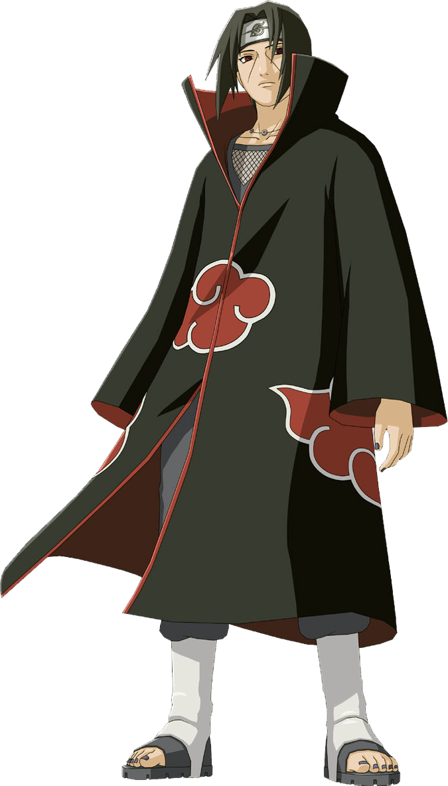

¿Quién es Itachi Uchiha?
Itachi nació dentro del Clan Uchiha, siendo el hijo mayor del líder del clan, Fugaku Uchiha y de su esposa Mikoto Uchiha. Él siempre fue considerado y elogiado como el mejor en su generación, un genio por encima de todos los demás. Incluso sobrepasaba las expectativas de un miembro experto del Clan Uchiha. Sin embargo, ni siquiera su familia, amigos o profesores lo podían entender. Cuando sólo tenía cuatro años, Itachi ya había sido testigo de la pérdida de muchas vidas debido a la Tercera Guerra Mundial Shinobi, que lo traumatizaron emocionalmente, al punto de considerar el suicidio, y lo hizo convertirse en un pacifista. A los 7 años, se graduó de la Academia Ninja como el primero en su clase después de sólo un año, por aquel entonces comenzó a sentir interés por el origen de la aldea, dominó el Sharingan a la edad de 8 años, pasó los exámenes Chūnin a los 10 años, y se convirtió en capitán de las unidades ANBU a los 13 años.